Aprende a usar la app de flota en tu móvil
Desde el móvil anotas los kilómetros y el consumo de tu coche, avisas de una avería o de un accidente, subes documentos y ves lo que tienes pendiente. Si supervisas coches, también llevas tu flota desde aquí.
Cada apartado te lo enseña paso a paso con capturas reales de la app. Arriba a la derecha puedes elegir si conduces, si supervisas o las dos cosas, y verás solo lo que te toca.
👉 Prueba el móvil de la derecha: toca los botones de la barra de abajo de la captura, o cambia de vista con los botones de encima.
🔍 Toca cualquier captura del tutorial para verla en grande.
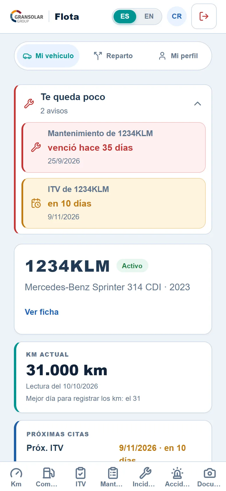
Introducción: la app en un minuto
Un vídeo corto con todo lo que hace la app. Sin sonido: los textos van en pantalla.
Qué sale en el vídeo
Toca el minuto para saltar a esa escena, o el nombre del apartado para verlo paso a paso en el tutorial.
-
Tu flota, en el bolsilloAnota los kilómetros y el consumo, avisa de una avería o de un accidente, sube documentos y mira lo que tienes pendiente. Si supervisas, también llevas tu flota.
-
Entra con tu usuarioTu usuario o email y tu contraseña, en castellano o en inglés.
-
Tu coche, de un vistazoLo que te queda poco, tus kilómetros y las próximas citas de ITV y mantenimiento, nada más entrar.
-
Registra los km una vez al mesLo que marca el cuadro del coche. La app te dice el mejor día para hacerlo.
-
Anota el consumo medioEl del último trayecto, según el ordenador de a bordo. Sin litros ni importe.
-
Registra la ITV y el mantenimientoCuando ya los has pasado, desde 30 días antes de la cita.
-
Comunica una incidencia en pocos pasosUna avería, un cambio de neumáticos, un mantenimiento puntual u otra petición, y pide coche de sustitución si lo necesitas.
-
¿Un accidente? Primero, tu seguridad.Un parte guiado en cuatro pasos que puedes rellenar más tarde, con calma y en un sitio seguro.
-
Sube y pide documentosLos papeles del coche y los tuyos. Corregir y borrar se pide, y lo decide la gestión de flota.
-
Sabe siempre qué tienes pendienteLos avisos y las alertas te dicen, por colores, lo que tienes que hacer pronto.
-
Toda tu flota de un vistazoTus coches y conductores, y las alertas, incidencias y accidentes abiertos, resueltos sin salir de la app.
-
Programa la ITV y el mantenimientoCita la próxima de los coches que supervisas.
-
Los kilómetros, bajo controlMira qué coches van camino de pasarse de los km del contrato y propón otro conductor.
-
Flota · GransolarAbre el enlace que te ha dado la empresa y entra.
Entrar en la app
Con el enlace que te ha dado la empresa, tu usuario y tu contraseña.
- Abre en el móvil el enlace de la app de campo que te ha dado la empresa. También viene en los correos de recordatorio, en el botón Abrir la app de campo.
- Escribe tu usuario o email y tu contraseña y pulsa Entrar.
- Arriba a la derecha puedes cambiar el idioma: ES / EN.
- Si te lo pregunta, permite las notificaciones: así te avisará de lo que tengas pendiente.
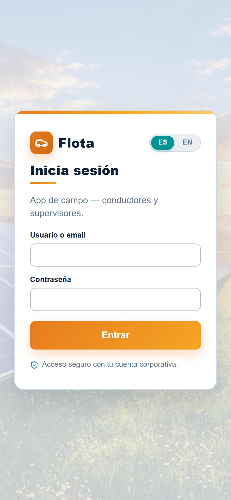
Pantalla de entrada
Conoce la pantalla
La app no es igual para todos: lo que ves depende de si conduces, de si supervisas o de las dos cosas.
¿Qué ve cada uno?
| Botón de arriba | Conductor | Supervisor |
|---|---|---|
| Mi vehículo El coche que conduces | ✔ Siempre | Solo si además conduces un coche. Si no, te manda a «Flota». |
| Reparto Coches que compartes | Solo si tienes alguno en reparto | Solo si además conduces y tienes alguno |
| Flota Los coches que supervisas | ✖ No lo ves | ✔ Siempre |
| Mi perfil Tus datos, documentos y peticiones | ✔ Siempre | ✔ Siempre |
| Barra de abajo | Las 7 acciones de tu coche | En «Flota»: Inicio · Alertas · Proyección |
Si no ves un botón de los que salen aquí, no es un fallo: tu usuario no tiene ese rol o no tienes nada que enseñar en él.
Conductor Lo que ves al entrar, en la vista «Mi vehículo».
- Cabecera. El idioma (ES / EN), tus iniciales (abren Mi perfil) y el botón rojo para salir.
- Vistas. Mi vehículo, Reparto (solo si compartes algún coche) y Mi perfil. «Flota» no te sale: es de supervisores.
- Te queda poco. Lo que tienes que hacer pronto. Si no aparece, no tienes nada pendiente.
- Tu coche. Matrícula, estado y modelo. Ver ficha abre la ficha completa.
- KM actual y Próximas citas: la última lectura, el mejor día para registrar los km del mes y las fechas de ITV y mantenimiento. Más abajo, plegadas: Alertas, Incidencias, Accidentes y Documentación, cada una con su número.
- Barra de abajo. Las acciones de tu coche: Km Combustible ITV Mantenimiento Incidencia Accidente Documento. La ITV solo sale si tu coche tiene una cita programada.
«Mi vehículo» · los números coinciden con los pasos
Supervisor Lo que ves al pulsar «Flota». La app recuerda la última vista que usaste.
- Cabecera. La misma que la de los conductores: idioma, tus iniciales (Mi perfil) y salir.
- Vistas. Tú tienes además Flota. Si también conduces un coche, sigues teniendo Mi vehículo para el tuyo.
- Flota a cargo. Cuántos coches ves y cuántas lecturas de km faltan este mes.
- A tu cargo. Tus coches y tus conductores. Toca una cifra para ver la lista.
- Alertas e incidencias. Lo que hay abierto en tus coches: alertas, incidencias y accidentes. Desde cada lista lo resuelves ahí mismo. Más abajo está la lista de coches, con buscador.
- Barra de abajo. En «Flota» cambia: Inicio Alertas Proyección. Lo que haces con un coche (km, ITV, recordatorio…) va en su ficha.
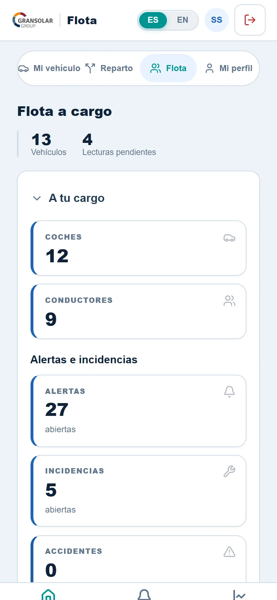
1 2 3 4 5 6«Flota» · los números coinciden con los pasos
Registrar los kilómetros
Una vez al mes, lo que marca el cuadro del coche.
- Toca Km en la barra de abajo. Se abre «Registrar km» con la matrícula de tu coche.
- Arriba te recuerda la última lectura y su fecha: la nueva tiene que ser igual o mayor.
- La fecha de la lectura ya viene con la de hoy.
- En Odómetro (km totales del cuadro) escribe los kilómetros que marca el coche, sin puntos.
- Pulsa Guardar lectura.
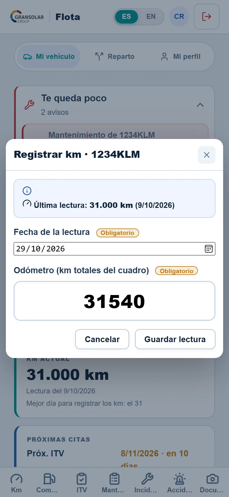
Ventana «Registrar km»
Anotar el consumo medio
El consumo que te enseña el ordenador de a bordo.
- Mira en el ordenador de a bordo el consumo medio de tu último trayecto o ciclo de repostaje (l/100 km, o kWh/100 km si es eléctrico).
- Toca Combustible. Se abre «Consumo medio».
- Escribe la cifra en Consumo medio real en ese momento (por ejemplo 6,4). La fecha ya viene puesta.
- Pulsa Guardar consumo. Debajo verás tu última anotación.
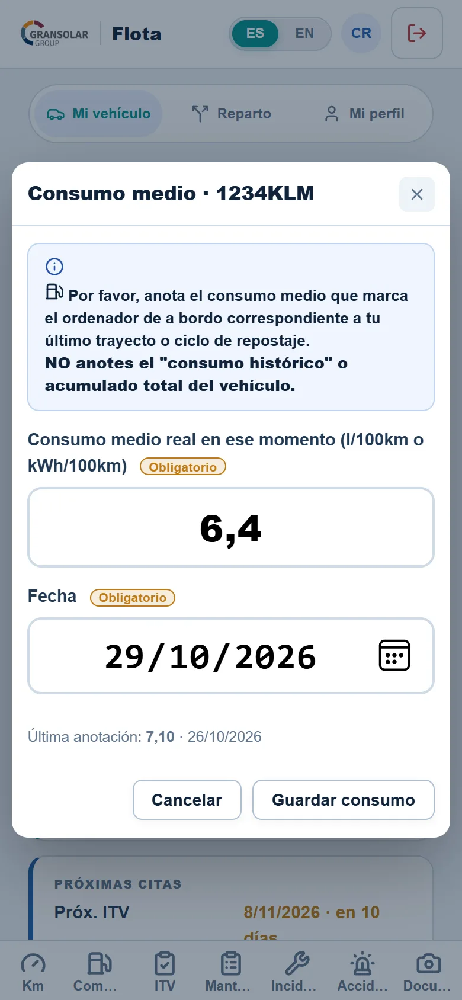
Ventana «Consumo medio»
Registrar la ITV y el mantenimiento
Cuando ya has pasado la ITV o la revisión, lo apuntas aquí.
ITV
- Toca ITV. Arriba verás la próxima ITV programada.
- Pon la fecha de la ITV (el botón Hoy la rellena).
- Elige el resultado: Favorable cierra los avisos de ITV; Desfavorable deja la cita pendiente.
- Si puedes, añade el informe de la ITV (foto o PDF) y pulsa Registrar ITV.
Mantenimiento
- Toca Mantenimiento. Verás el plan del coche (por ejemplo Revisión general), cada cuánto toca y cuándo es la próxima.
- Cuando lo hayas hecho, pulsa Marcar como realizado y completa la fecha y los km.
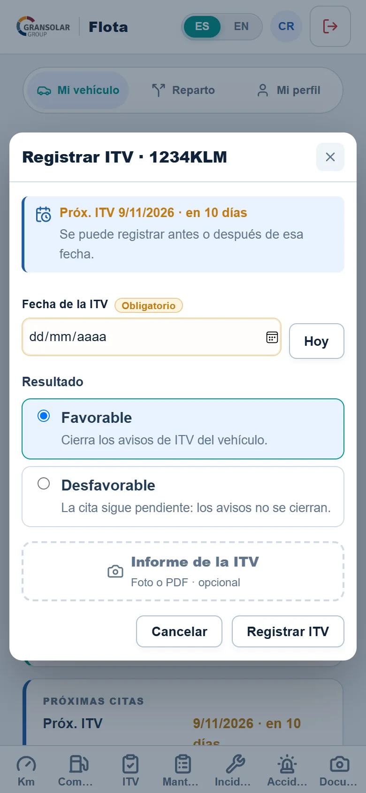
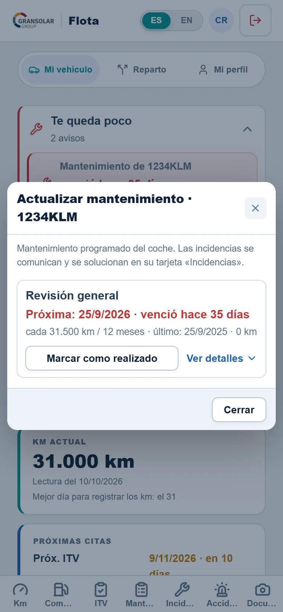
Comunicar una incidencia
Una avería, un cambio de neumáticos, un mantenimiento puntual o cualquier otra petición a la gestión de flota.
Toca Incidencia en la barra de abajo. Se abre la ventana «Comunicar incidencia · matrícula», que va por pestañas: arriba ves en cuál estás (en verde las que ya has hecho), pasas a la siguiente con Continuar y vuelves con Atrás sin perder lo escrito. Solo la última pestaña envía.
El recorrido depende del tipo que elijas
Pestaña «Incidencia»: qué pasa
Es la primera y la más importante: aquí dices qué ocurre y con qué urgencia.
| Campo | Qué poner |
|---|---|
| Tipo Obligatorio | Qué clase de incidencia es (ver la tabla de abajo). Decide las pestañas que vendrán después. |
| Fecha Obligatorio | Cuándo ha pasado. Viene con la de hoy y no admite fechas futuras. |
| Prioridad Obligatorio | Lo urgente que es para ti: Crítica, Moderada, Funcional o Informativa. Por defecto, Moderada. La gestión ordena su bandeja por ella. |
| Descripción Obligatorio | Cuéntalo con tus palabras: qué notas, desde cuándo, si hay testigos encendidos… En Cambio de neumáticos no sale aquí: va en su propia pestaña y es opcional. |
Debajo de la prioridad, un recuadro ámbar te explica el tipo elegido, para que aciertes:
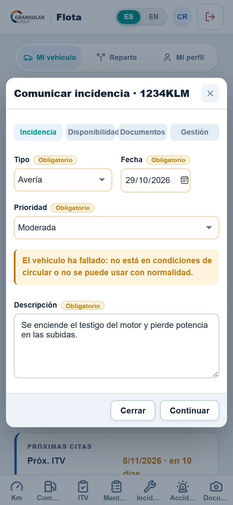
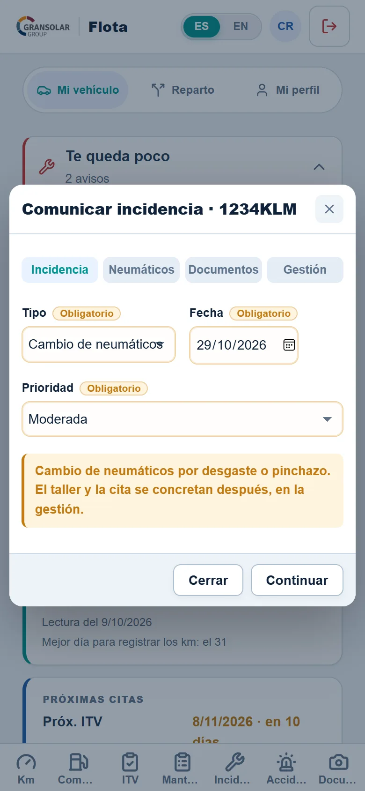
Pestaña «Disponibilidad»: cómo queda el coche
Solo sale en Avería y Mantenimiento puntual. Elige una de las tres tarjetas:
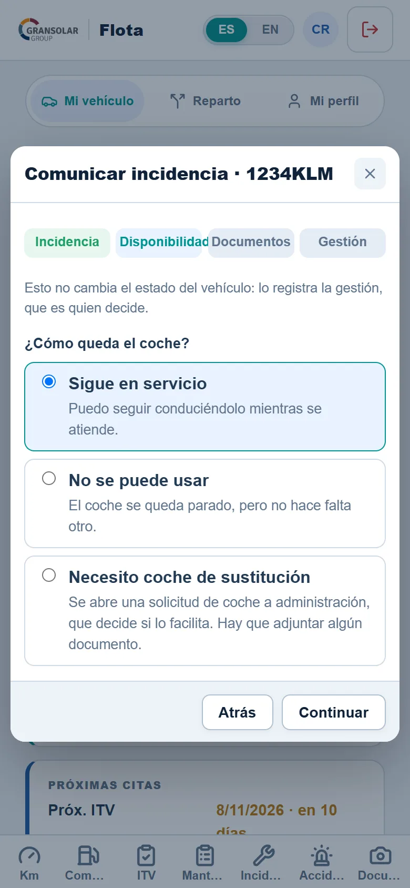
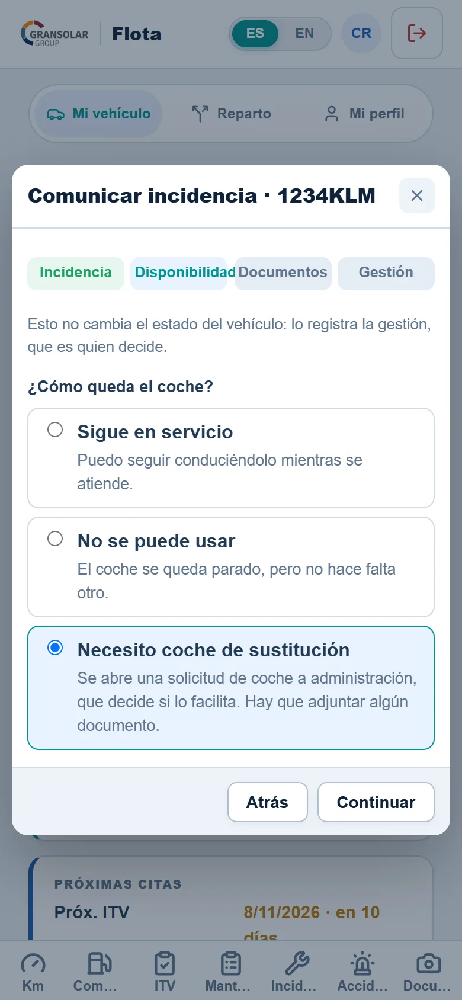
Pestaña «Neumáticos»: el parte de ruedas
Solo sale si el tipo es Cambio de neumáticos, y ocupa el sitio de «Disponibilidad». Arriba te recuerda qué es obligatorio.
| Campo | Qué poner |
|---|---|
| Kilometraje actual Obligatorio | Viene con la última lectura del coche. Si ha rodado desde entonces, corrígelo. |
| Motivo del cambio Obligatorio | Desgaste o Pinchazo. Según lo que elijas cambian los campos de debajo. |
| ¿Qué ruedas? (desgaste) | Delanteras, Traseras o Las 4 ruedas, y las medidas de cada eje elegido. |
| ¿Qué rueda? (pinchazo) | Delantera o trasera, izquierda o derecha, y la medida de ese neumático. |
| Comentario | Opcional: cualquier cosa que ayude al taller. |
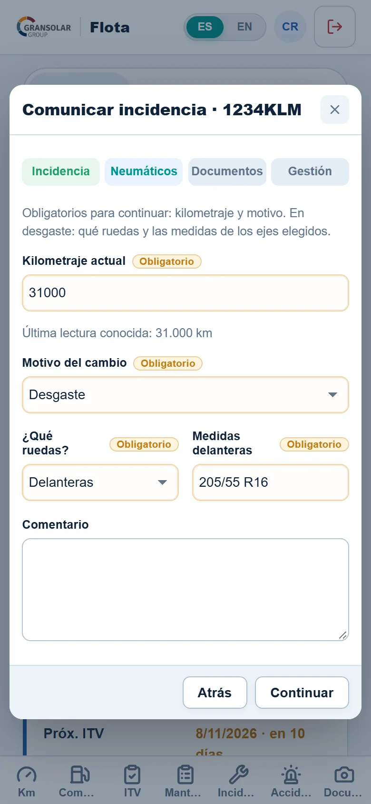
Desgaste de las delanteras
Pestaña «Documentos»: lo que lo prueba
Adjunta lo que ayude a entenderlo: fotos del daño, el presupuesto del taller… Se aceptan fotos y PDF, y puedes añadir varios.
- Toca Adjuntar documento o foto: puedes hacer la foto en el momento o elegirla de la galería.
- Cada archivo sale en una lista con su papelera por si te equivocas.
- Normalmente es opcional: puedes continuar sin adjuntar nada.
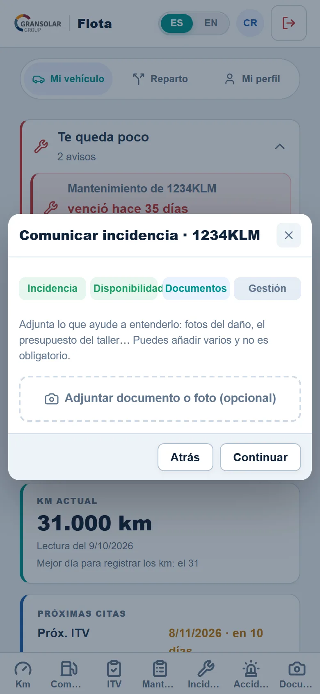
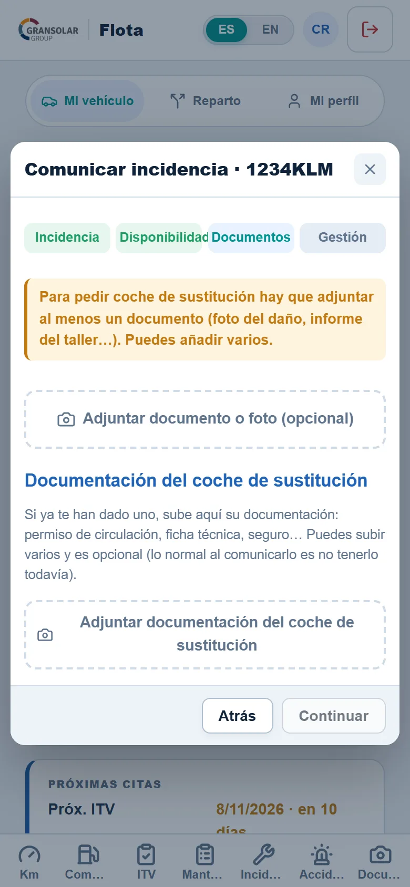
Pestaña «Gestión»: dónde se arregla
La última pestaña. Ayuda a la gestión a buscarte taller.
| Campo | Qué poner |
|---|---|
| Código postal de la ubicación preferente | Si lo sabes, el CP desde el que prefieres ir al taller más cercano (5 cifras). Es opcional: puedes dejarlo en blanco y se completa al cerrar la incidencia. |
- Repasa con Atrás si quieres cambiar algo.
- Pulsa Comunicar incidencia para enviarla.
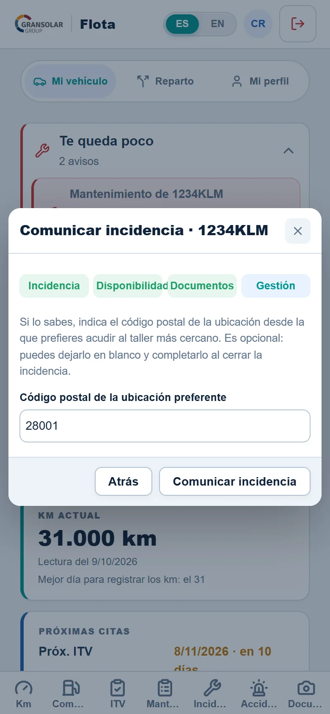
Último paso: enviar
Y después de enviar, ¿qué?
La ventana te confirma lo que ha pasado con uno de estos mensajes:
- La incidencia aparece en la tarjeta Incidencias de tu coche, con su número en el título, hasta que se cierre.
- La gestión de flota la atiende: busca taller, cambia el estado del coche si hace falta y, cuando está resuelta, la cierra.
- Si pediste coche de sustitución, la solicitud aparece también en Mi perfil → Peticiones, donde ves si se ha concedido o rechazado.
Comunicar un accidente
Un parte guiado en cuatro pasos. Solo son obligatorios los datos del primer paso y la descripción de los daños: lo demás se puede completar después.
¿Qué ha pasado?
En el lugar del accidente
Márcalo según lo vayas haciendo. Es solo una ayuda: no se guarda en ningún sitio.
Dónde está el botón «Accidente»
Mi vehículo
En la barra de abajo: Accidente. Es lo normal: el parte es del coche que conduces.
Ficha del coche
Entre sus botones, Accidente. Sirve también para un coche que tienes en reparto.
Flota (supervisores)
En la tarjeta de cada coche, Accidente, para comunicarlo en nombre del conductor. Queda registrado a tu nombre.
Se abre «Comunicación de accidente · matrícula», con cuatro pasos arriba. Avanzas con Continuar y vuelves con Atrás sin perder nada:
Paso 1 · «Dónde y cuándo»
Al abrirse, los obligatorios salen marcados con su chapa y Continuar está apagado. Se enciende cuando están todos.
| Campo | Qué poner |
|---|---|
| Calle Obligatorio | Dónde ha sido. En carretera, su nombre y el punto kilométrico. |
| Número | Si lo hay. |
| Código postal Obligatorio | 5 cifras. |
| Localidad · Provincia Obligatorio | Las dos. |
| Fecha y hora Obligatorio | Cuándo ocurrió, no cuándo lo rellenas. No admite una hora futura. |
| Teléfono Obligatorio | Uno en el que te localicen estos días. |
| Prioridad Obligatorio | Crítica si el coche no puede circular o hay heridos; Moderada (la que viene puesta) para un golpe normal. |
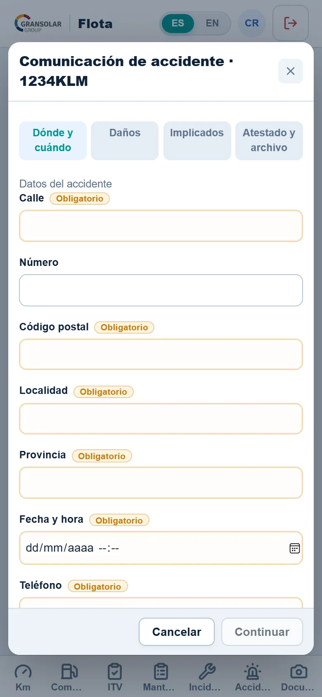
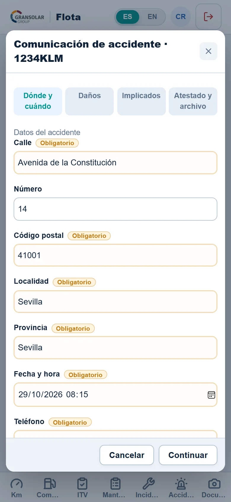
Paso 2 · «Daños»
| Campo | Qué poner |
|---|---|
| Descripción de los daños Obligatorio | Qué le ha pasado al coche y cómo ocurrió, en pocas frases. |
| CP del taller (opcional) | Si sabes a qué zona iría el coche a reparar. |
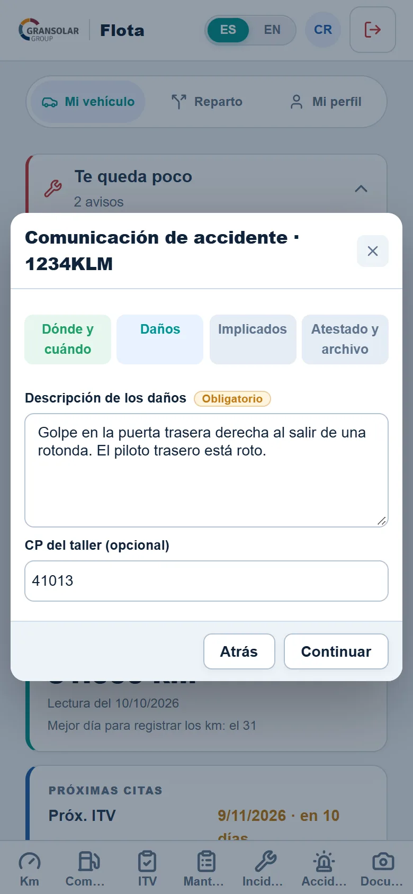
Daños
Paso 3 · «Implicados»
Otros vehículos y personas heridas, si los hay. Es opcional: si solo ha sido tu coche, pulsa Continuar sin añadir a nadie.
- En Terceros implicados (otros vehículos) o en Lesionados (personas heridas), pulsa + Añadir.
- Se abre una ventana para esa persona. Rellénala y pulsa Guardar:
Ventana Qué pide Tercero implicado Nombre y apellidos y matrícula Obligatorio; marca, modelo, teléfono, aseguradora, nº de póliza y sus daños. Lesionado Nombre y apellidos Obligatorio; teléfono, correo, matrícula del coche en el que iba y plaza ocupada (Conductor u Ocupante). - Cada persona queda en la lista en una línea, con el lápiz para corregirla y la papelera para quitarla. Añade tantas como haga falta.
Chuleta: qué pedirle al otro conductor
- Nombre y apellidos
- Matrícula
- Marca y modelo
- Teléfono
- Aseguradora
- Nº de póliza
Son justo los campos de la ventana «Tercero implicado». Casi todos vienen en el parte amistoso o en el recibo del seguro del otro.
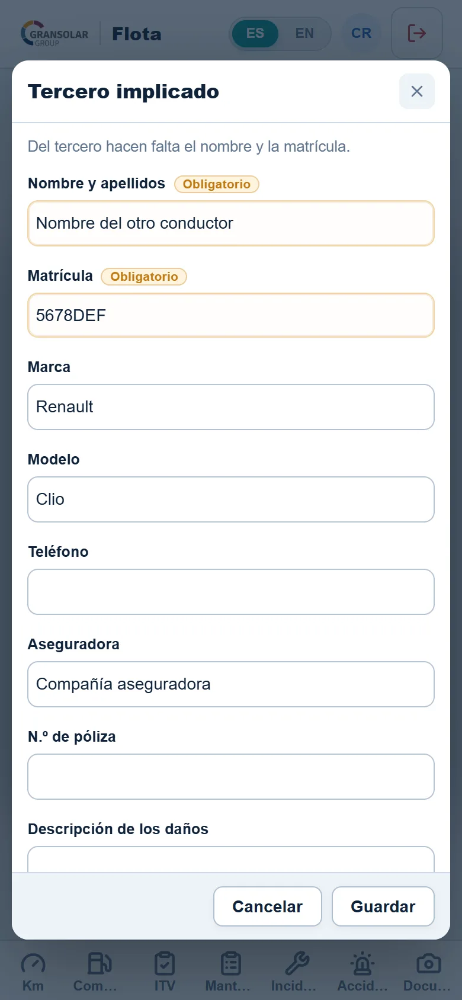
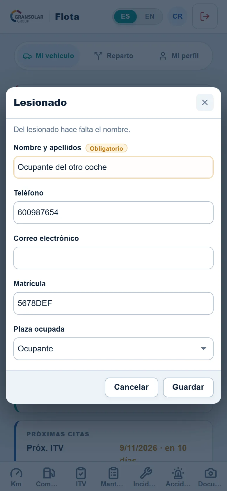
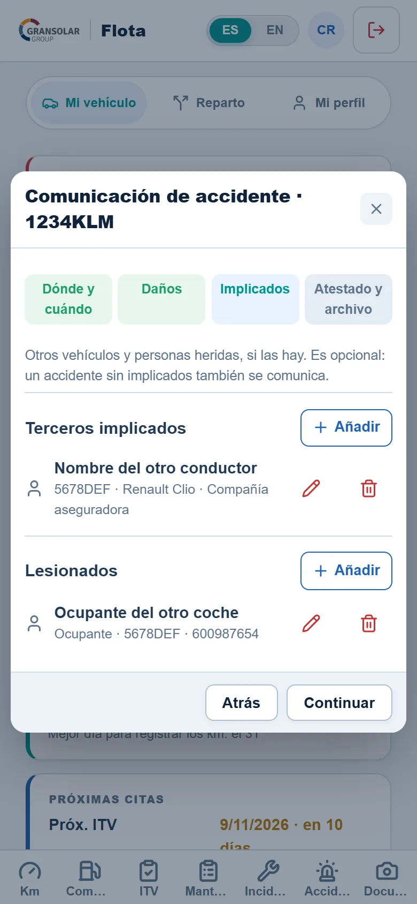
Paso 4 · «Atestado y archivo»
| Campo | Qué poner |
|---|---|
| Referencia del atestado (opcional) | Si ha intervenido la policía, el número que te den. |
| Archivo del parte (opcional) | La foto o el PDF del parte amistoso. Las fotos se comprimen solas. |
- Pulsa Comunicar accidente.
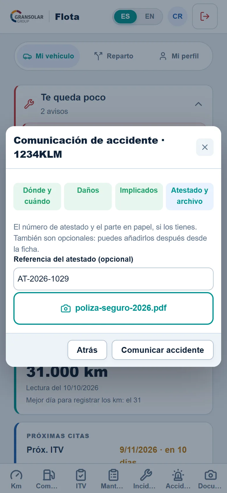
Último paso: enviar
Y después de enviar, ¿qué?
- El accidente aparece en la tarjeta Accidentes de tu coche, con su número en el título.
- La gestión de flota lo tramita con el seguro, decide el estado del coche y, cuando está resuelto, lo cierra con el expediente del siniestro y quién asume el coste.
- Si te quedas sin coche para trabajar, díselo a tu supervisor o a la gestión.
Dudas frecuentes sobre accidentes
¿Lo comunico como accidente o como incidencia?
El otro conductor no quiere firmar el parte amistoso
Me he equivocado en un dato después de enviar
Fue hace unos días y no lo comuniqué
Coches que compartes (Reparto)
Coches que usas unos días o unas horas, junto con otras personas.
- Si tienes algún coche repartido, arriba aparece Reparto. Si no, esa vista no sale.
- Cada tarjeta te dice los días, el horario, tu parte, el periodo y con quién lo repartes. Si además es tu coche, lleva la marca Tu coche.
- Toca la tarjeta para abrir la ficha del coche: mientras dure el reparto puedes anotar sus km y su combustible, comunicar incidencias o subir documentos.
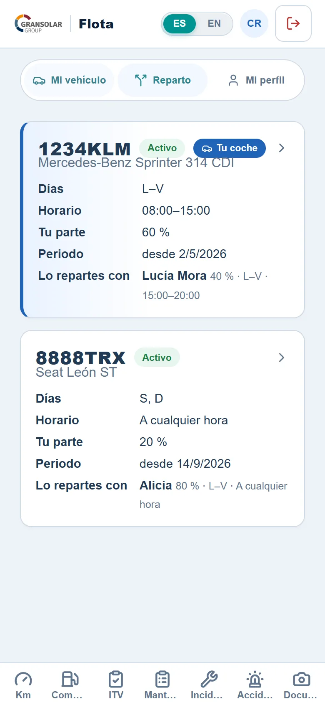
Vista «Reparto»
Subir, pedir y consultar documentos
Los papeles del coche (permiso de circulación, seguro…) y los tuyos (permiso de conducir…).
¿Qué necesitas hacer?
La tarjeta «Documentación»
En la pantalla de Mi vehículo, baja hasta Documentación y tócala para desplegarla. El número de al lado es cuántos documentos hay en total.
- Dentro hay dos pestañas, cada una con su número:
- Documentación del coche: permiso de circulación, ficha técnica, seguro, contrato… Se quedan con el coche cuando lo devuelves.
- Documentación del conductor: tus papeles personales, como el permiso de conducir. Van contigo, y los ven también tu supervisor y la gestión de flota. Abajo tienes Subir documento personal.
- Cada fila dice el tipo, el día en que se subió y, si caduca, cuándo caduca.
- La chapa de color dice su estado:
VigenteEstá en regla.CaducadoHa pasado su fecha: hay que subir el nuevo (o pedirlo).Pendiente de archivarYa está en la app y se guarda en el archivo de la empresa más tarde, solo.Pendiente de borradoAlguien ha pedido borrarlo y la gestión lo está revisando.
- Algunos documentos llevan debajo una línea con cómo está tu acceso, por ejemplo «Lectura: con solicitud · Descarga: con solicitud · Borrado: no permitido». Mira Pedir acceso.
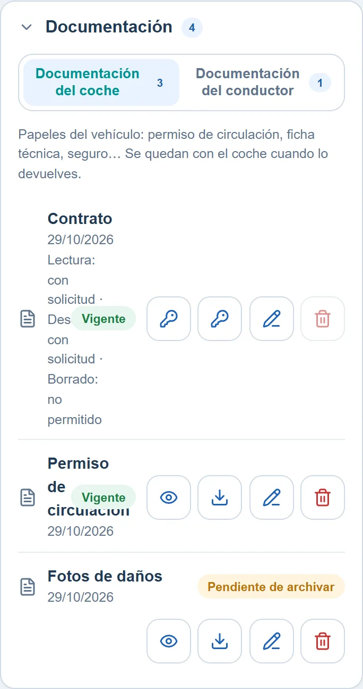
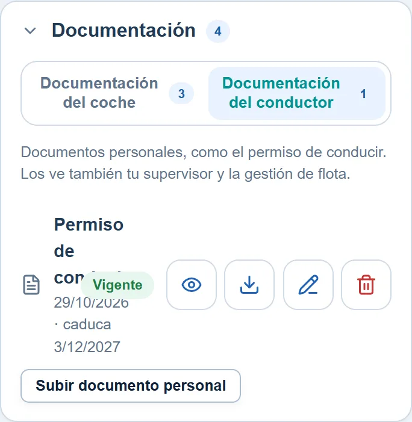
Subir · 1 · «Qué quieres»
Toca Documento en la barra de abajo. Se abre la ventana «Documento · matrícula», y lo primero que pregunta es qué vienes a hacer:
Según lo que subas, el camino cambia
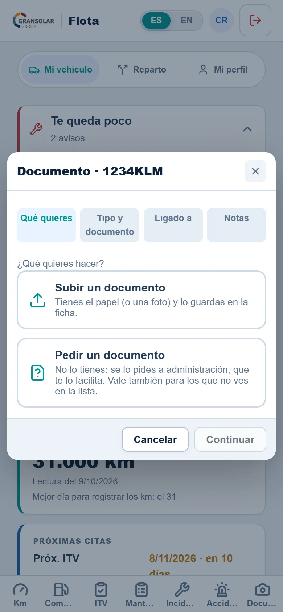
Subir o pedir
Subir · 2 · «Tipo y documento»
| Campo | Qué poner |
|---|---|
| Documento de | El vehículo (sus papeles, que cuelgan de la matrícula) o El conductor · tu nombre (tus papeles personales). Si eliges el conductor, cambian los tipos y se salta Ligado a. |
| Tipo de documento | Del coche: permiso de circulación, ficha técnica, seguro, contrato, acta de devolución, parte de accidente, fotos de daños u Otro. Tuyos: permiso de conducir u Otro. |
| Foto o PDF (cámara / galería) Obligatorio | Toca la caja: haz la foto en el momento o elige un archivo del móvil. Cuando lo eliges, sale su nombre en verde. Se admiten fotos (JPG, PNG, HEIC…) y PDF. |
| Caducidad (opcional) | Solo sale en los que caducan: seguro, contrato y permiso de conducir. Ponla si la sabes. |
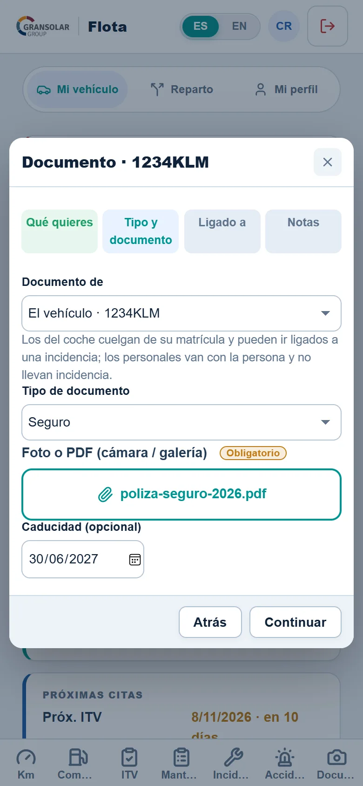
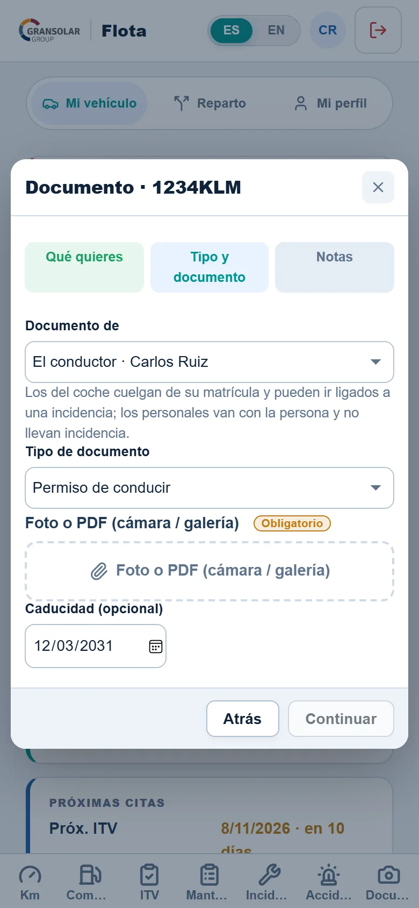
Subir · 3 · «Ligado a»
Aquí dices a qué incidencia del coche acompaña el documento. Si es personal, este paso no sale. Depende del tipo:
| Tipo | ¿Hay que ligarlo? |
|---|---|
| Fotos de daños | Obligatorio Elige la incidencia abierta de la que son las fotos. |
| Parte de accidente | Obligatorio Elige el accidente abierto. Si no hay ninguno, no se puede subir y la app te lo dice. |
| Contrato · Ficha técnica · Acta de devolución · Otro | Opcional: elige una incidencia si viene a cuento, o deja Ninguna. |
| Seguro · Permiso de circulación | No se ligan. La pestaña te dice: «Este documento no se liga a ninguna incidencia: sigue al paso siguiente». |
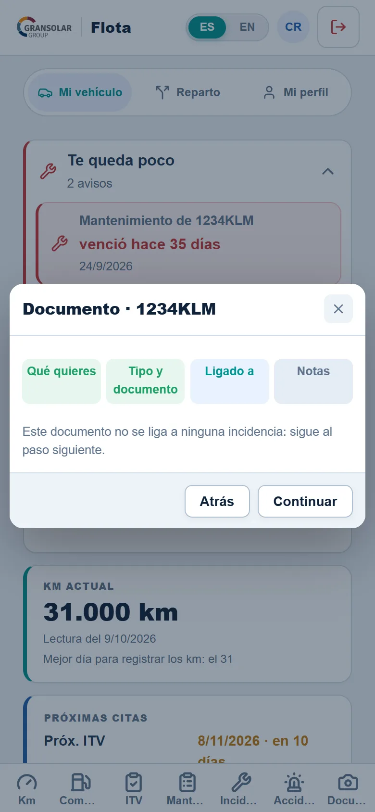
El seguro no se liga a nada
Subir · 4 · «Notas» y subir
- Escribe en Notas (opcional) algo que ayude a reconocerlo después en la lista, por ejemplo «Póliza renovada en junio».
- Pulsa Subir.
- Verás «Documento subido» con uno de estos mensajes:
«Documento subido y archivado en Drive.»Todo listo.«Documento subido. Queda pendiente de archivar en Drive…»Ya está en la app; se archiva solo más tarde.«Estás sin conexión: el documento se subirá solo en cuanto vuelva la red.»Se queda en el móvil y se envía al recuperar cobertura. No cierres sesión mientras tanto.
- Desde ahí puedes Subir otro o Cerrar. El documento ya aparece en la tarjeta Documentación.
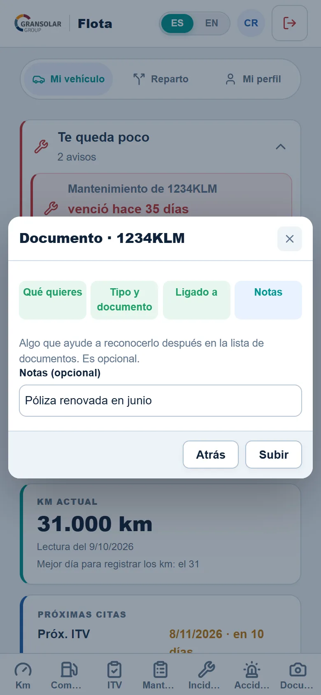
Último paso: subir
Pedir un documento que no tienes
En Qué quieres elige Pedir un documento. Solo hay una pestaña más, «Qué pides»:
| Campo | Qué poner |
|---|---|
| Documento de | Del vehículo o tuyo. Solo puedes pedir los tuyos, no los de otra persona. |
| Documento que necesitas Obligatorio | Permiso de circulación, ficha técnica, seguro, contrato, acta de devolución, permiso de conducir u Otro. |
| ¿Para qué lo necesitas? Obligatorio | Explícalo: es lo que lee quien lo decide. Por ejemplo «Me la piden en el taller para el cambio de ruedas». |
- Pulsa Enviar la petición. Verás «Petición enviada».
- Administración la ve en su bandeja y te facilita el documento (o te dice por qué no).
- Síguela en Mi perfil → Peticiones, donde ves si sigue pendiente o ya se ha decidido.
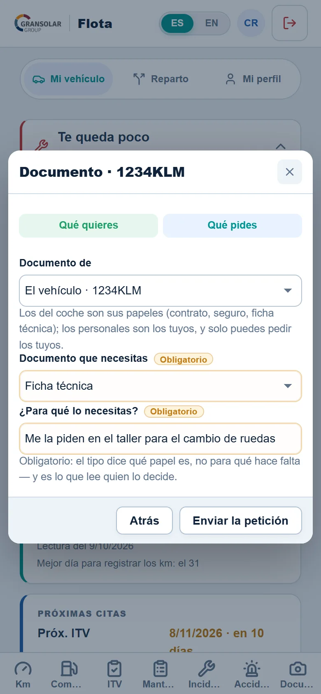
Pedir la ficha técnica
Ver y descargar
Cada fila de la tarjeta Documentación lleva sus botones a la derecha. Los dos primeros son para consultar:
Ver
Lo abre dentro de la app, sin salir a otra web ni necesitar cuenta de Google. Al cerrar la ventana, la copia desaparece del móvil. Dentro tienes «Descargar» por si quieres guardarlo.
Descargar
Guarda una copia en tu móvil, con un nombre que dice qué es y de qué coche. Útil para enseñarlo sin cobertura (en un control, en el taller…).
Los botones de una fila, de un vistazo
| Botón | Qué hace |
|---|---|
| Ver | Lo abre en la app. |
| Descargar | Guarda una copia en el móvil. |
| Lápiz | Pedir que se corrija. |
| Papelera | Pedir que se borre. |
| Llave | Sale en lugar del ojo o de la descarga: hay que pedir acceso. |
| Reloj de arena | Ya lo has pedido y la gestión aún no ha contestado. |
Los botones, a la derecha de cada fila
Pedir que se corrija un documento
¿Lo subiste con el tipo equivocado, con la caducidad mal o con una nota que no toca? No hace falta borrarlo y subirlo otra vez: pide que lo corrijan.
- Toca el lápiz de la fila. Se abre «Corregir documento».
- Cambia lo que esté mal: el tipo de documento, la fecha de caducidad (solo en los que caducan) o la nota del documento.
- En Por qué hay que corregirlo explícalo en una frase.
- Pulsa Enviar petición. La gestión la aplica o la rechaza.
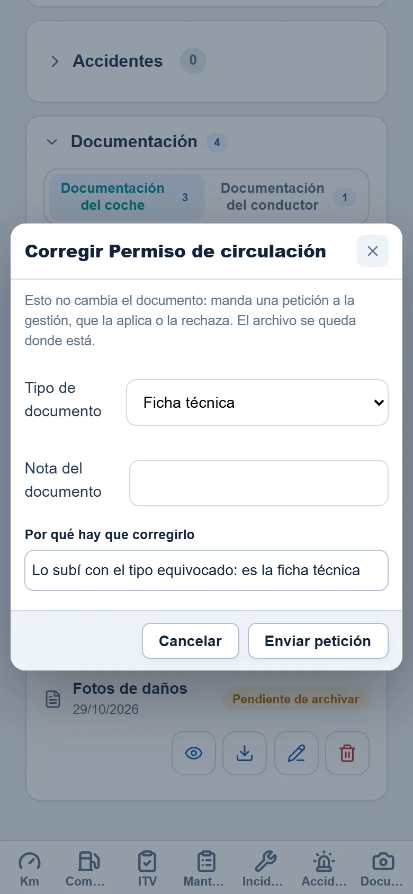
Corregir el tipo
Pedir que se borre un documento
- Toca la papelera de la fila. Se abre «Pedir el borrado · documento».
- Si quieres, escribe el motivo (opcional): «Está repetido», «Es de otro coche»…
- Pulsa Pedir borrado.
- El documento sigue en la lista con la chapa Pendiente de borrado y la papelera apagada, hasta que la gestión decida.
Lo que puede decidir la gestión
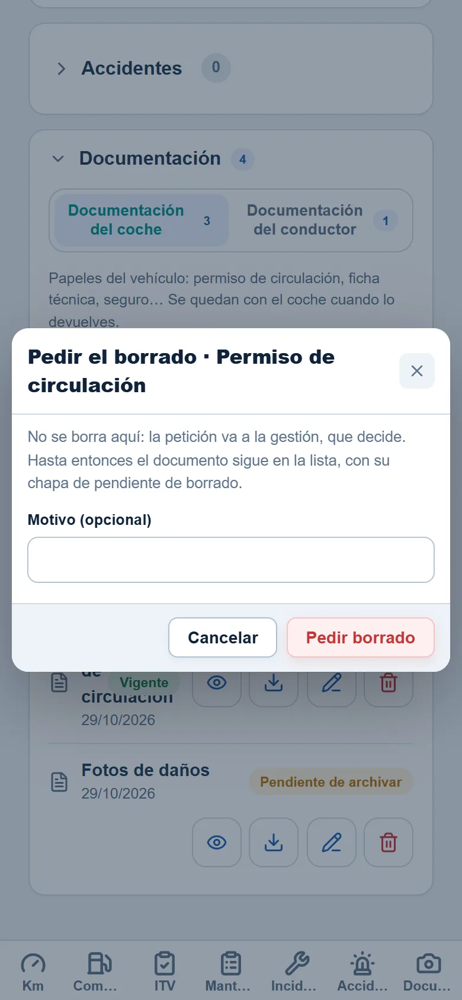
Pedir el borrado
Pedir acceso a un documento
La gestión decide, por tipo de documento, qué puede hacer el conductor con él. Por eso algunos documentos se ven «con solicitud» y otros «no permitido». La línea bajo el nombre te lo dice:
| La línea dice… | Qué significa |
|---|---|
| con solicitud | Hay que pedirlo. En vez del ojo o la flecha sale una llave. |
| pedida, pendiente de la gestión | Ya lo has pedido: sale un reloj de arena. |
| concedida | Te lo han concedido: vuelve el botón normal. |
| no permitida / no permitido | No se puede ni pidiéndolo. El botón sale apagado. |
- Toca la llave . Se abre «Pedir la lectura» (o la descarga) del documento.
- Escribe para qué lo necesitas (opcional) y pulsa Enviar petición.
- Cuando la gestión te lo conceda, verás otra vez el ojo o la flecha.
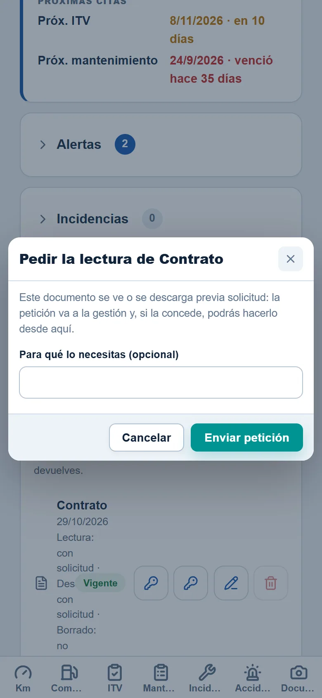
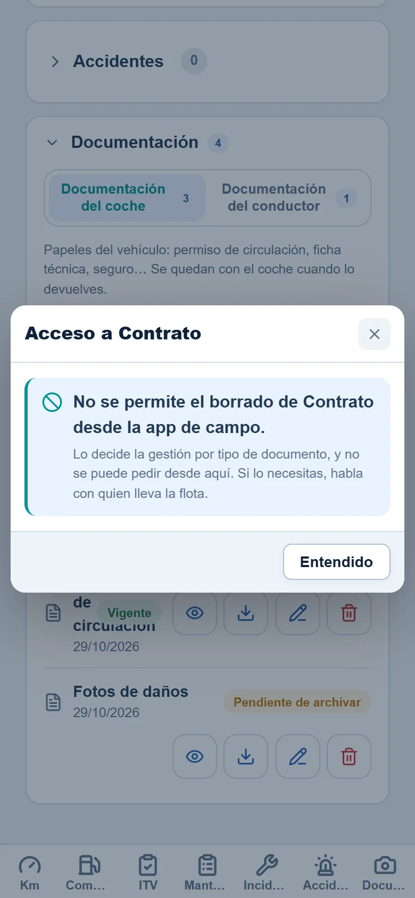
Los tipos de documento, de un vistazo
| Tipo | De quién | ¿Caduca? | ¿Va ligado a una incidencia? | ¿Se puede pedir? |
|---|---|---|---|---|
| Permiso de circulación | Coche | No | No | Sí |
| Ficha técnica | Coche | No | Opcional | Sí |
| Seguro | Coche | Sí | No | Sí |
| Contrato | Coche | Sí | Opcional | Sí |
| Acta de devolución | Coche | No | Opcional | Sí |
| Fotos de daños | Coche | No | Obligatorio | No |
| Parte de accidente | Coche | No | Obligatorio (accidente abierto) | No |
| Factura de taller · Informe de ITV | Coche | — | No se suben desde aquí: se adjuntan al cerrar la incidencia o al registrar la ITV. | |
| Permiso de conducir | Tuyo | Sí | No | Sí |
| Otro | Coche o tuyo | No | Opcional | Sí |
Dudas frecuentes sobre documentos
No encuentro un documento que sé que existe
Me he equivocado de tipo al subirlo
Pone «Pendiente de archivar» desde hace días
Al abrirlo dice «No se pudo abrir el documento»
¿Quién ve mis documentos personales?
Lo que tienes pendiente
«Te queda poco», las alertas y los colores.
- Al entrar verás arriba «Te queda poco» si falta algo: la lectura de km del mes, el consumo, una ITV o un mantenimiento cercano. Toca el aviso y se abre su formulario ahí mismo.
- Despliega la tarjeta Alertas para ver todo lo abierto del coche, con su nivel (Crítica Aviso) y su fecha.
- Pulsa Solucionar en la alerta: normalmente es hacer lo que pide (registrar la lectura, la ITV, el mantenimiento…). Al guardarlo, la alerta se cierra.
¿Qué significan los colores?
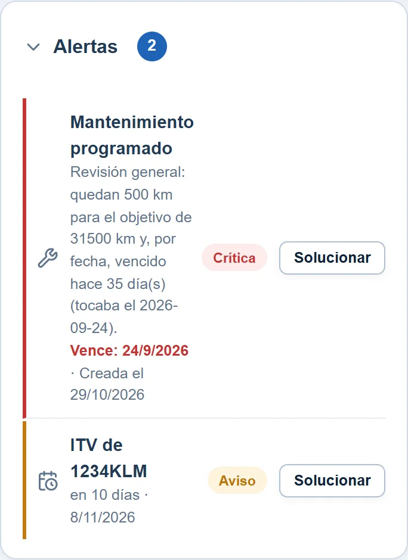
Mi perfil: tus datos y tus peticiones
Tu ficha no se edita directamente: se pide el cambio.
- Entra en Mi perfil o toca tus iniciales en la cabecera. Verás tu correo, teléfono, tipo de permiso y si tienes tarjeta de combustible.
- Abajo, Mis datos abre una ventana en 3 pasos:
- Tus datos: corrige solo lo que esté mal.
- Documentos: revisa tus documentos personales.
- Enviar: repasa lo que cambia, añade una nota y envía.
- La gestión de flota revisa la petición y la aplica o la rechaza.
- En Peticiones ves todo lo que has pedido, pendiente y resuelto (también lo rechazado). En Mis documentos, tus papeles personales.
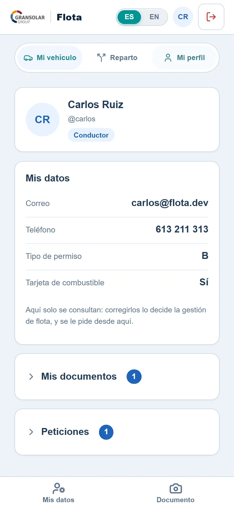
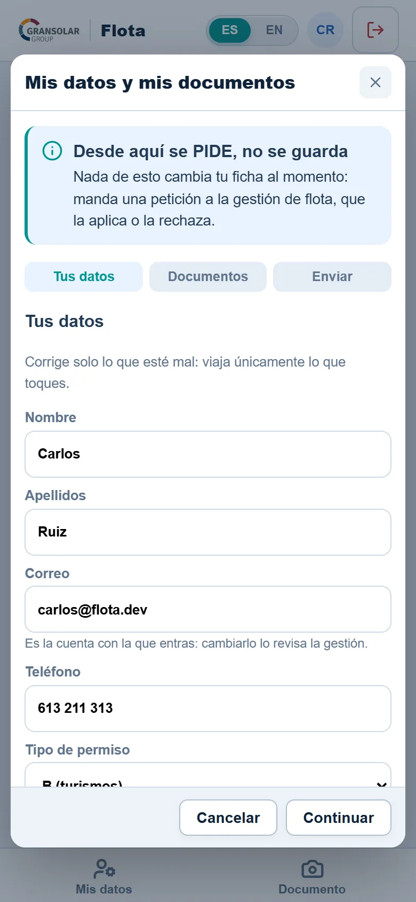
Llevar tu flota
Si supervisas coches, la vista «Flota» es tu panel: lo que tienes, lo que hay que atender y cómo resolverlo sin salir de la app.
¿Qué necesitas hacer?
Entrar en «Flota» y leer «A tu cargo»
- Pulsa Flota arriba. La barra de abajo cambia a Inicio Alertas Proyección km.
- Arriba, Flota a cargo te dice cuántos vehículos ves y cuántas lecturas de km faltan este mes.
- La tarjeta A tu cargo tiene dos bloques:
- Lo que tienes: Coches que supervisas y Conductores que los llevan.
- Alertas e incidencias: cuántas Alertas, Incidencias y Accidentes hay abiertos.
- Toca cualquier cifra y se abre su lista. Las alertas y las incidencias se resuelven ahí mismo, con el mismo formulario que en el resto de la app.
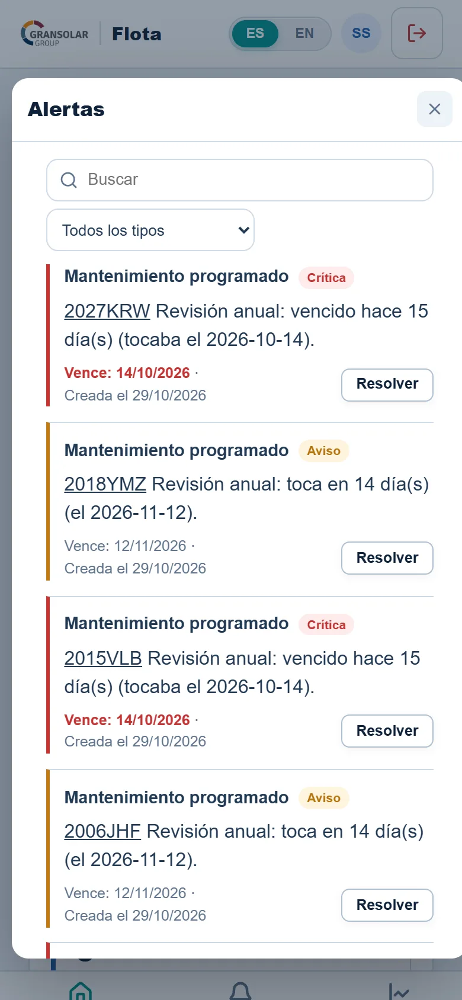
La lista de coches
- Debajo de A tu cargo están todos tus coches, uno por tarjeta: matrícula, estado, quién lo lleva y sus kilómetros.
- Usa el buscador (matrícula, modelo, conductor…) y el filtro de estado para acotar.
- Si supervisas coches multiusuario, la lista se parte en dos grupos plegables: Flota general y Coches multiusuario. En los multiusuario no hay conductor: tú registras sus km y su combustible.
- Cada tarjeta lleva sus atajos con iconos:
Incidencia Comunicarla en nombre del conductor. Accidente El parte de accidente. Mantenimiento Abre Actualizar por su pestaña de mantenimiento. Recordatorio Enviar recordatorio al conductor. Programar ITV Poner la cita de ITV. Programar mantenimiento Elegir su programa de mantenimiento. - Toca la tarjeta para abrir la ficha del coche, con todos sus botones. Ver la ficha.
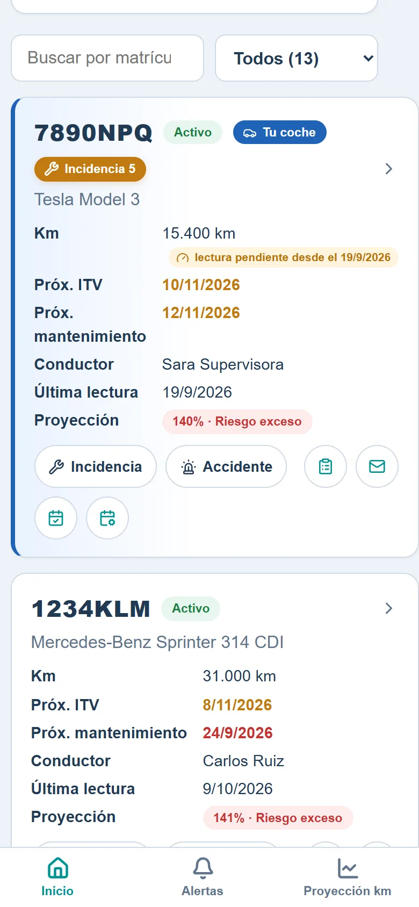
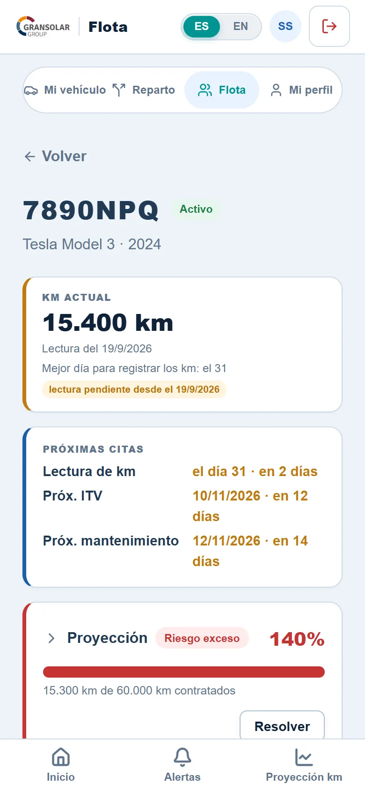
La ficha del coche
Toca un coche de la lista. Arriba ves sus km, sus próximas citas y su proyección; si falta la lectura del mes, un aviso con Registrarla ahora. Debajo, sus botones:
| Registrar km | La lectura, como el conductor. |
| Consumo medio | El consumo. |
| Registrar ITV | La ITV ya pasada. Sale si tiene cita. |
| Actualizar mantenimiento | Abre la ventana «Actualizar» (abajo). |
| Programar ITV · Programar mantenimiento | Dar las citas. |
| Incidencia · Accidente | Comunicar en nombre del conductor. |
| Pedir o subir documento | Documentos de ese coche. |
| Enviar recordatorio | Avisar al conductor. |
La ventana «Actualizar»
Actualizar mantenimiento abre «Actualizar · matrícula» por la pestaña de mantenimiento, y desde ahí pasas a las demás: Km, Combustible, ITV (si tiene cita), Mantenimiento (si tiene plan) e Incidencias (las abiertas, con su número, ordenadas por prioridad). Es lo cómodo cuando traes varias cosas del mismo coche: al guardar no se cierra, te dice qué guardó y sigues con otra pestaña.
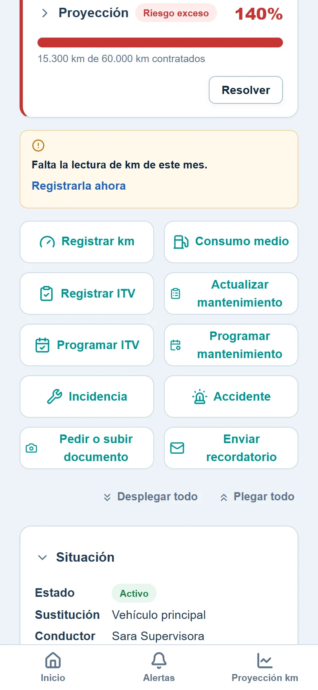
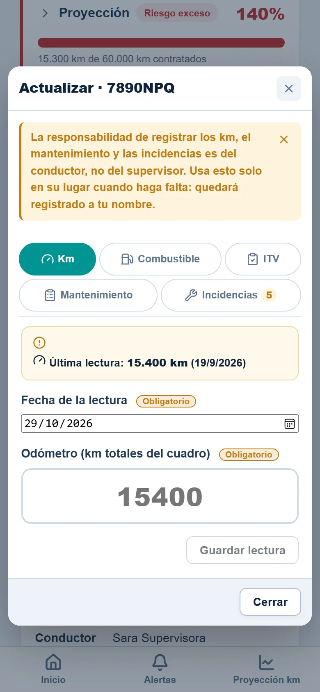
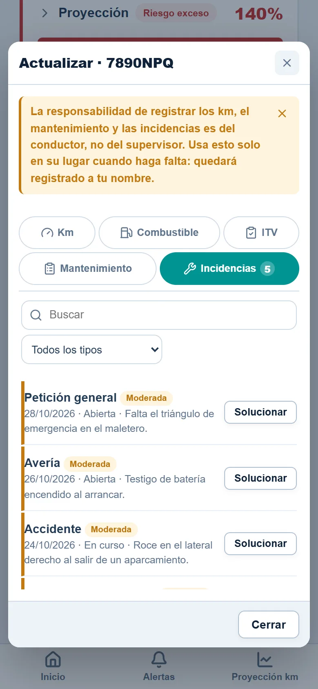
Programar la ITV y el mantenimiento
Las citas de tus coches las puedes poner tú. Son dos botones distintos en la tarjeta del coche (y en su ficha):
Programar ITV
| Fecha de la ITV Obligatorio | La que te haya dado la estación. Se puede corregir después. |
| CP preferente | Opcional: desde dónde buscar estación (la zona, no la estación). 5 cifras. |
Si ya tenía cita, guardar la corrige: la cita es una.
Programar mantenimiento
- Elige el programa del catálogo común (por ejemplo Revisión general): trae solo cada cuántos km y meses toca.
- Indica desde cuándo cuenta: la fecha, los km o los dos, según el programa. Los km se cargan del coche de un toque.
- Guarda.
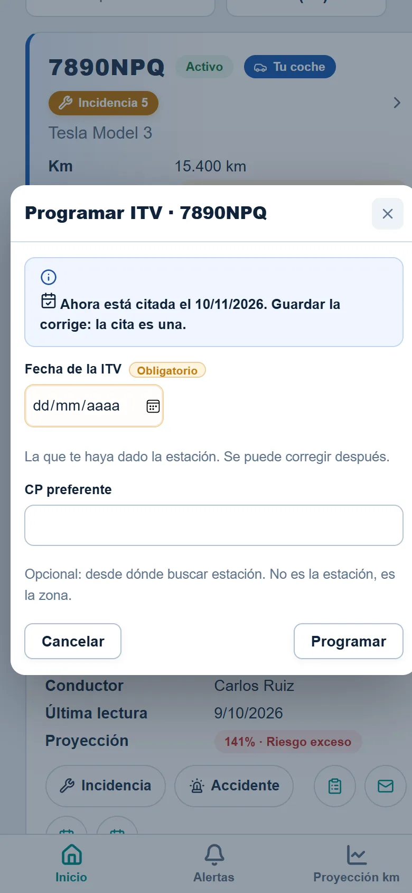
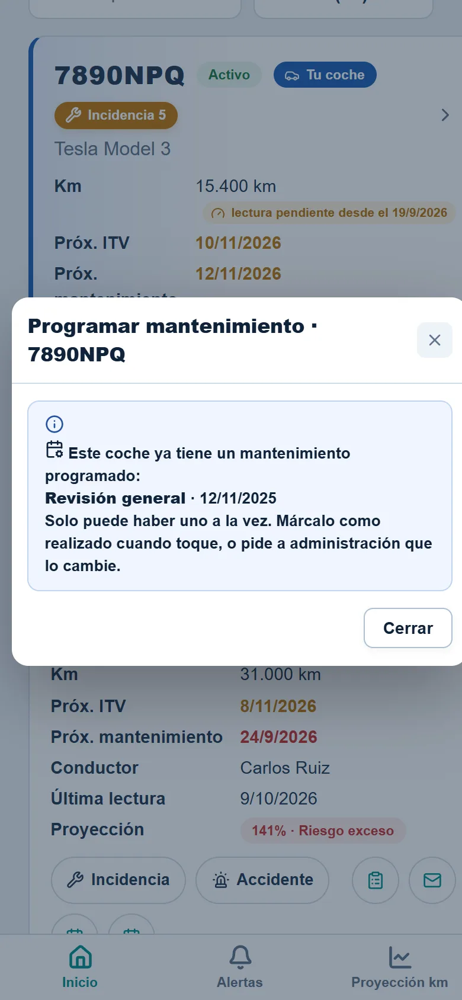
Enviar un recordatorio al conductor
El icono del sobre de la tarjeta (o Enviar recordatorio en la ficha) abre «Recordatorio · matrícula», con el nombre del conductor arriba.
| Campo | Qué poner |
|---|---|
| Motivo | Lectura de km sin registrar, ITV o Mantenimiento. Cada opción enseña su fecha (última lectura, próxima ITV…) para que veas si de verdad toca. |
| Cómo | Casillas Enviar correo y Crear alerta en la app (puedes marcar las dos). |
| Correo | Plantilla de gestión (el correo oficial de ese motivo; tu mensaje va dentro, y abajo ves lo que saldrá) o Texto propio (escribes tú el correo entero). |
| Mensaje adicional | Opcional, con la plantilla. |
- Pulsa Enviar.
- La ventana dice qué ha pasado: «Correo enviado.», «Alerta creada en la app.» o por qué no salió el correo (el conductor no tiene email, el correo está deshabilitado…).
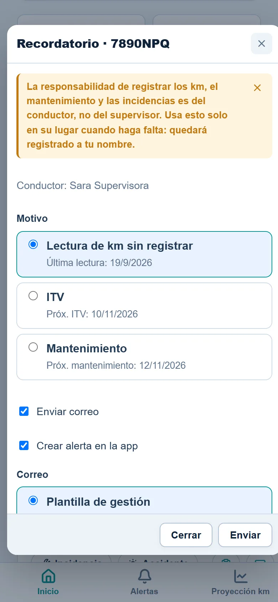
Recordatorio
La bandeja de alertas de toda tu flota
- Pulsa Alertas en la barra de abajo.
- Hay tres tarjetas plegadas: Alertas, Incidencias y Accidentes, cada una con cuántas hay abiertas.
- Despliega una: cada fila dice de qué coche es. Arriba tienes buscar (también por matrícula, sin acentos), filtrar por tipo y ordenar por prioridad o por fecha.
- Pulsa Solucionar en una alerta: se abre lo que pide (registrar km, la ITV, el mantenimiento…). Al guardarlo, la alerta se cierra.
- Ver cerradas enseña lo que ya está resuelto.
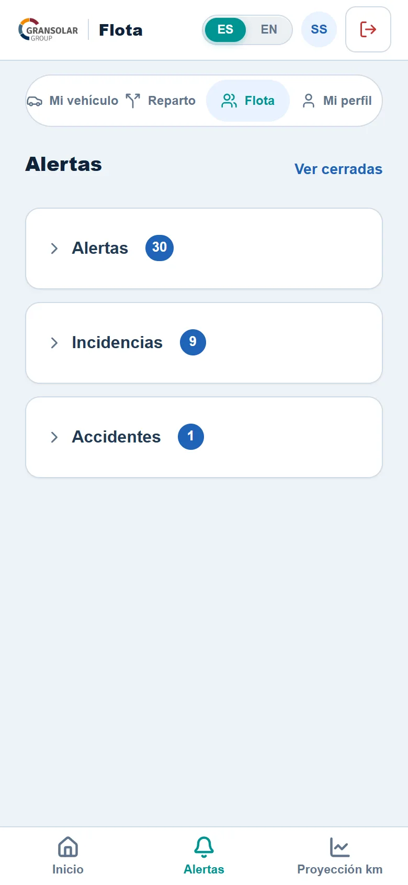
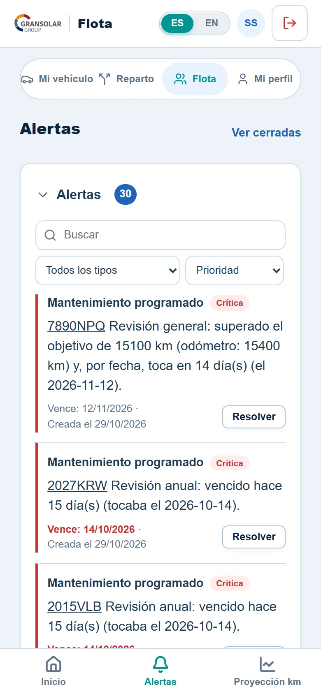
Proyección km: quién se va a pasar del contrato
- Pulsa Proyección km. Arriba: cuántos vehículos, cuántos a vigilar y cuántos en riesgo.
- Filtra con los chips: Todos, Riesgo exceso, Dentro…
- Cada tarjeta enseña el % de km gastado, la barra (la raya marca dónde debería ir según el tiempo de contrato), la media mensual frente a la contratada, la proyección a fin de contrato y los km restantes. Si se va a pasar, sale el exceso estimado en km y euros.
- El botón de la gráfica enseña la evolución de las lecturas.
- Si el coche tiene la alerta de exceso, pulsa Resolver.
Resolver un exceso: proponer otro conductor
La ventana pregunta «¿Debería llevarlo otra persona?»: propón a alguien de tu flota que ruede menos, o elige «Nadie de la lista — lo explico abajo» y escribe la nota. Pulsa Enviar propuesta.
Sin cobertura
Lo que registres sin red no se pierde.
- Si guardas algo sin conexión, la app lo deja en cola y te lo dice con un aviso ámbar bajo la cabecera.
- El botón de esa acción lleva un punto ámbar mientras espera.
- Cuando vuelve la conexión, se envía solo (o toca el aviso para enviarlo ya) y te dice lo que se ha mandado.
Preguntas frecuentes
Las dudas más habituales.